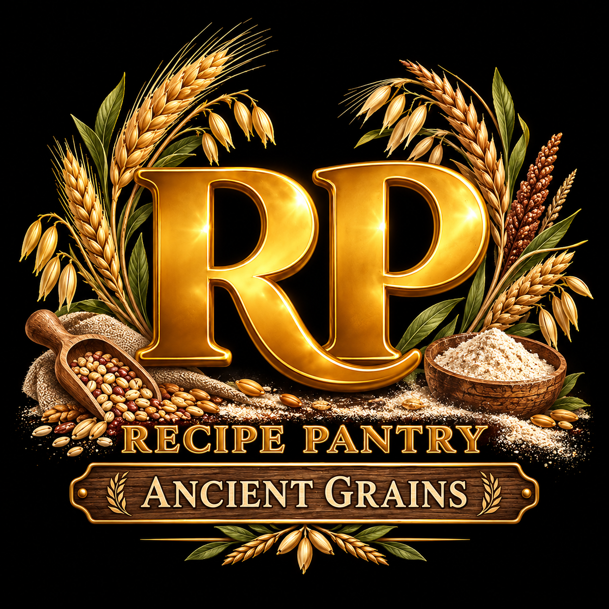
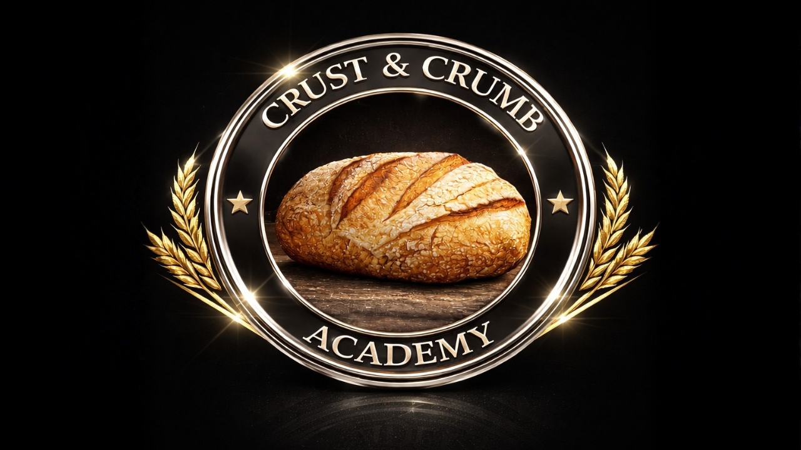

From Berries to Bread · Ancient Grain Series
Why Your Fresh-Milled Sourdough Is Dense
From Berries to BreadDense bread leaves clues. Can you read them? This quiz tests what you learned about grain, milling, hydration, dough structure, and fermentation.
- 10 questions
- Drawn at random from 20
- 80% to pass
- No timer
Krusty's introduction leads straight into the lesson. The questions begin only when you are ready.
Lesson first
Watch the lesson before you take the quiz.
Henry walks through grain, milling, hydration, dough structure, and fermentation, so the questions have a real lesson behind them.
When you finish the lesson, start a fresh set of 10 questions drawn at random from the full bank of 20.
Question 1 of 100 correct
0 streak
From Berries to Bread · Quiz complete
Your read is in.
PASS0%0 of 10
Every loaf leaves clues. Use what you learned to choose one useful change for your next bake. Know the grain. Mill the flour. Read the dough. Perfection isn't required. Progress is.